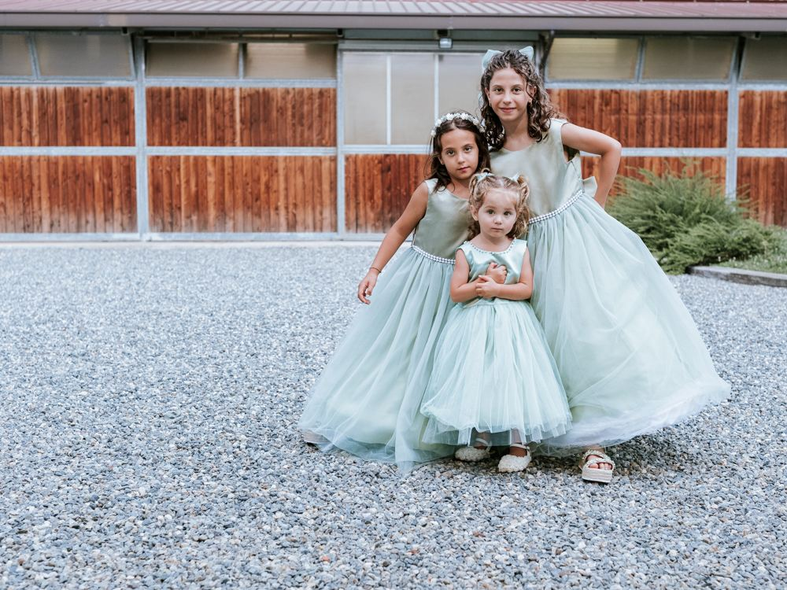
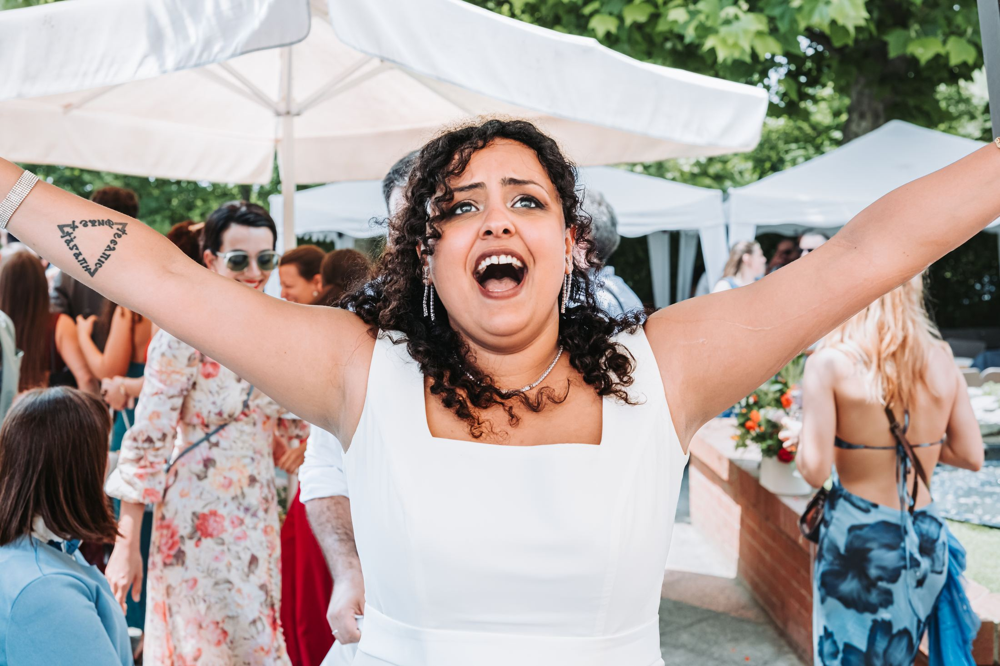
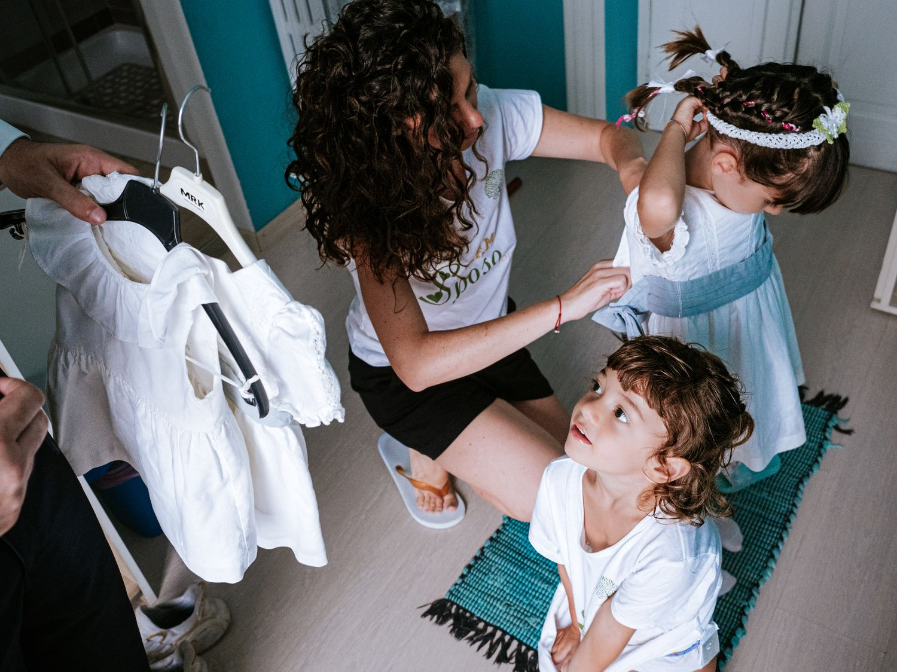
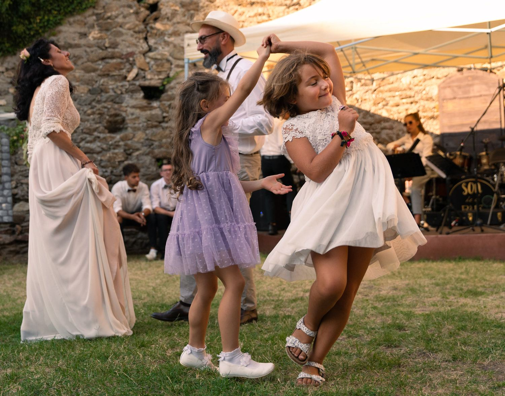
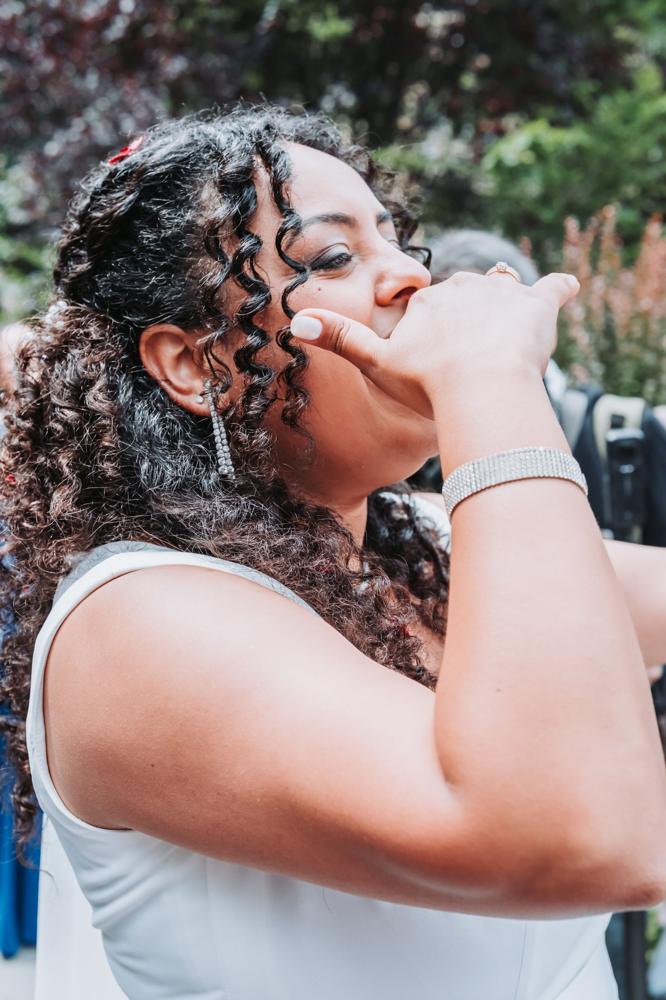
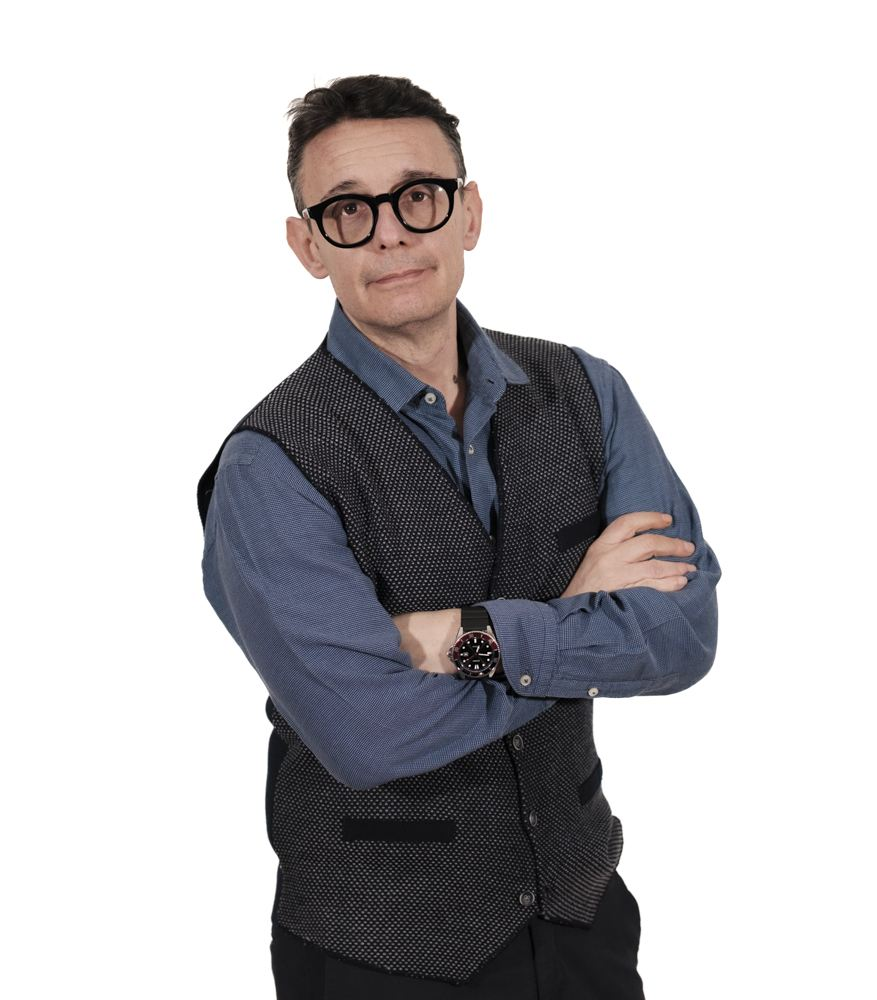

Matrimoni con figli
La mia specializzazione. I bambini non sono un imprevisto da gestire: sono parte del racconto, e spesso ne sono la parte migliore.
Raccontami la vostra famiglia
Reportage di matrimonio in Piemonte, Veneto ed Emilia Romagna. Specializzato in matrimoni di coppie con figli. A tutto il resto ci pensiamo noi.
Che abbiate figli o no, dimenticate le pose e le lunghe sessioni fotografiche. Pensate solo a divertirvi.
Un film per vincere l'Oscar ha bisogno di un grande cast. Per questo diamo la giusta importanza a figli, parenti e amici, non solo agli sposi.
Basta con le solite foto degli sposi che si guardano languidamente dietro a un romantico laghetto. Diamo un po' di rock al vostro servizio.
Vivete il vostro grande giorno senza stress e senza pose che non vi rappresentano. Al resto ci pensiamo noi.

Reportage vuol dire raccontare la giornata mentre succede, non ricostruirla dopo. Nessuna posa costruita, nessuna interruzione: quello che vedete nelle fotografie e successo davvero, e voi eravate li a viverlo.
Con il mio servizio le foto del vostro matrimonio non sono mai state cosi naturali e divertenti. Siete voi, per come siete.
Lavoro su Piemonte, Veneto ed Emilia Romagna, e mi sposto volentieri dove serve.
Vedi come vieneUn preventivo su misura, mai un pacchetto preso da uno scaffale.

La mia specializzazione. I bambini non sono un imprevisto da gestire: sono parte del racconto, e spesso ne sono la parte migliore.
Raccontami la vostra famiglia
Dai preparativi alla festa, senza staccare. Il cast completo: figli, parenti, amici. Perche il matrimonio non finisce sugli sposi.
Chiedi un preventivo
Ogni matrimonio e diverso, quindi anche il preventivo. Scrivetemi data, luogo e come immaginate la giornata, e ne parliamo.
ScrivimiI fotografi vi sembrano tutti uguali? Avete le idee confuse a forza di cercare sul web, vedere centinaia di foto e ricevere preventivi uno diverso dall'altro? Questa guida mette ordine.
Richiedi la guidaLa presentazione completa dei servizi: come lavoro, cosa e compreso, come si arriva al preventivo. Scaricatela e poi scrivetemi.
Scarica la presentazioneLe foto sono di alta qualita e la disponibilita nel venire direttamente a casa mia e stata estremamente apprezzata.
Gabriella · recensione pubblicata
Dal 2018 sono un fotografo matrimonialista specializzato in matrimoni di coppie con figli e in reportage matrimoniale su Piemonte, Veneto ed Emilia Romagna.
Ho un metodo, si chiama Attimi di Vita, e serve a una cosa sola: farvi arrivare a fine giornata con le fotografie di quello che e successo davvero, e non di quello che avreste dovuto mettere in posa.
Se cercate un fotografo che vi faccia guardare languidamente dietro a un laghetto, non sono io. Se volete ridere, ballare e ritrovarvi in ogni scatto, parliamone.
Luca Marcellino
Alcune fotografie per darvi un'idea di come guardo un matrimonio.
In una versione pubblicata questi articoli arrivano dal blog e si aggiornano da soli.
La differenza tra chi dice di fare reportage e chi lo fa davvero, spiegata senza giri di parole.
LeggiL'incanto segreto dei matrimoni con i bambini, e perche cambiano il modo di fotografare la giornata.
LeggiCome riconoscere chi sa cogliere la verita del momento, prima ancora di aver visto un preventivo.
LeggiScrivetemi data, luogo e due righe su di voi. Vi rispondo con la disponibilita e un preventivo su misura, senza impegno.
Piemonte, Veneto ed Emilia Romagna
Reportage matrimoniale e matrimoni di coppie con figli
2018
{kind=link}
{kind=link}
{kind=link}
{kind=link}
{kind=link}
{kind=link}
{kind=link}
{kind=link}
{kind=link}
{kind=link}
{kind=link}
{kind=link}